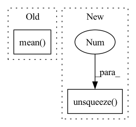

Pattern ID :1831
Before Change
x = torch.cat((x, static_x), dim=1)
// take the mean of all time steps (rows) with additional row for static features; output size = (batch_size, 64)
x = torch.mean( x, 1)
// pass through fully-connected part to lower dimension to 2 (binary classification)
return self.feed_forward(x)
After Change
// x = torch.mean(x, 1)
// take the masked mean of all time steps (rows) with additional row for static features; output size = (batch_size, 64)
mask = torch.cat((mask, torch.ones((x.size()[0], 1), dtype=torch.bool)), dim=1).unsqueeze(2 ) .long()
time_length = torch.FloatTensor(time_length).unsqueeze(1)
x = torch.sum(x * (1 - mask), dim=1) / (time_length + 1) // masked aggregation
In pattern: SUPERPATTERN
Frequency: 3
Non-data size: 2
Instances Fragment ID: 13087695
Project Name: mims-harvard/raindrop
Commit Name: c78a0c22f831e2f0ee3f125343ad6e4a2894d680
Time: 2021-08-19
Author: mz4730@student.uni-lj.si
File Name: code/baselines/Transformer_baseline.py
M Class Name: Transformer_P12
N Class Name: Transformer_P12
M Method Name: forward(4)
N Method Name: forward(4)
M Parent Class: nn.Module
N Parent Class: nn.Module
M File Name: code/baselines/Transformer_baseline.py
N File Name: code/baselines/Transformer_baseline.py
M Start Line: 147
M End Line: 163
N Start Line: 146
N End Line: 167
Before Change
batch_features = self.__cnn__(images) // (N, features_dim, block_num, block_num)
conv_features = self.__img2embed_conv__(batch_features).permute(0, 2, 3, 1) // (N, block_num, block_num, embed_dim * 0.5)
apool = torch.mean( conv_features, dim = 1) // (N, block_num, embed_dim * 0.5)
mpool, _ = torch.max(conv_features, dim = 1) // (N, block_num, embed_dim * 0.5)
imgs_embed = torch.cat([apool, mpool], dim = 2) // (N, block_num, embed_dim)After Change
//batch_texts = self.__clip__.encode_text(text_input)
//tags_embed = self.__text2embed__(self.__clip_drop__(batch_texts.float())).unsqueeze(1)
imgs_embed = self.__img2embed__(self.__clip_drop__(batch_features.float())).unsqueeze(1 )
words_embed = self.__content_embed__(input_ids)
indices = torch.arange(self.seq_len + self.tags_num + self.block_num).expand(batch, -1).to(device)
position_embed = self.__position_embed__(indices) Fragment ID: 13087694
Project Name: siwooyong/codalab-microsoft-coco-image-captioning-challenge
Commit Name: d24b22ec9f0be1acd2f307be20ec85f84f8d8795
Time: 2021-07-08
Author: 68500343+yongsiwoo@users.noreply.github.com
File Name: models/base_model.py
M Class Name: decoder
N Class Name: decoder
M Method Name: forward(4)
N Method Name: forward(3)
M Parent Class: nn.Module
N Parent Class: nn.Module
M File Name: models/base_model.py
N File Name: models/base_model.py
M Start Line: 57
M End Line: 74
N Start Line: 75
N End Line: 97
Before Change
mean_matrix = self.mean_table[top:down + 1, left:right + 1, :]
std_matrix = self.std_table[top:down + 1, left:right + 1, :]
x_mean = mean_matrix.mean(dim=0).mean(dim=0).unsqueeze(0).unsqueeze(-1).unsqueeze(-1) //self.kernel * // should deal with the boundary
x_std = std_matrix.mean(dim=0) .mean(dim=0).unsqueeze(0).unsqueeze(-1).unsqueeze(-1) //self.kernel *
//x_mean = x_mean.unsqueeze(-1).unsqueeze(-1)
//x_std = x_std.unsqueeze(-1).unsqueeze(-1)
After Change
x_std = x_std * self.kernel // 1, C, H, W
x_mean = x_mean.flatten(start_dim=2).sum(dim=2) // [1, C, H, W] -> [1, C, H * W] -> [1, C]
x_std = x_std.flatten(start_dim=2).sum(dim=2) // [1, C, H, W] -> [1, C, H * W] -> [1, C]
x_mean = x_mean.unsqueeze(-1).unsqueeze(-1 ) // [1, C] -> [1, C, 1, 1]
x_std = x_std.unsqueeze(-1).unsqueeze(-1) // [1, C] -> [1, C, 1, 1]
//top, down, left, right = self.query_neighbors(y_anchor=y_anchor, x_anchor=x_anchor, padding=padding) Fragment ID: 13087693
Project Name: kaminyou/urust
Commit Name: 63159b688ad053bad7fd41015170f131d547439d
Time: 2022-01-27
Author: kaminyouho@aetherai.com
File Name: models/kin.py
M Class Name: KernelizedInstanceNorm
N Class Name: KernelizedInstanceNorm
M Method Name: forward(5)
N Method Name: forward(5)
M Parent Class: nn.Module
N Parent Class: nn.Module
M File Name: models/kin.py
N File Name: models/kin.py
M Start Line: 83
M End Line: 96
N Start Line: 89
N End Line: 115